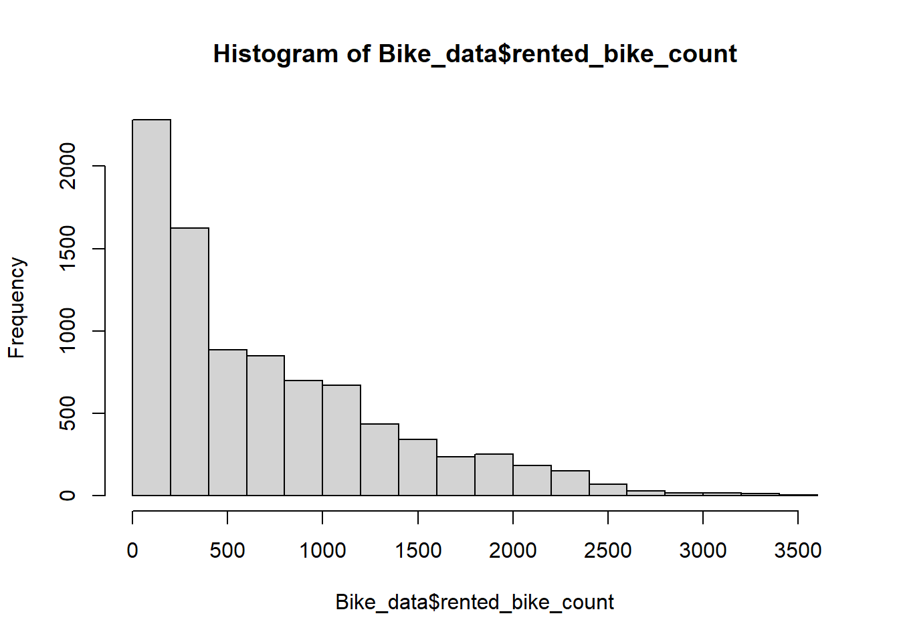
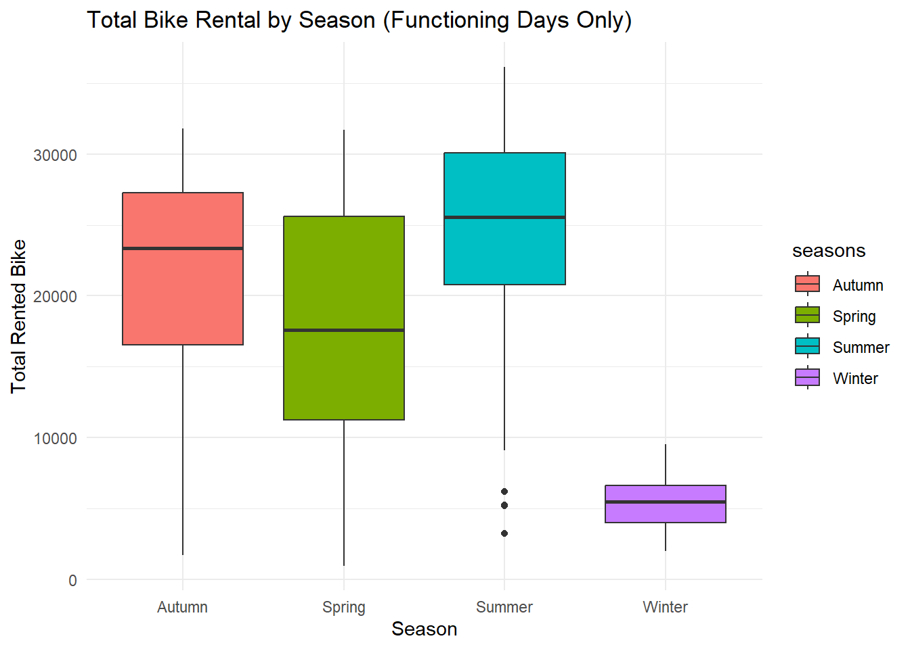
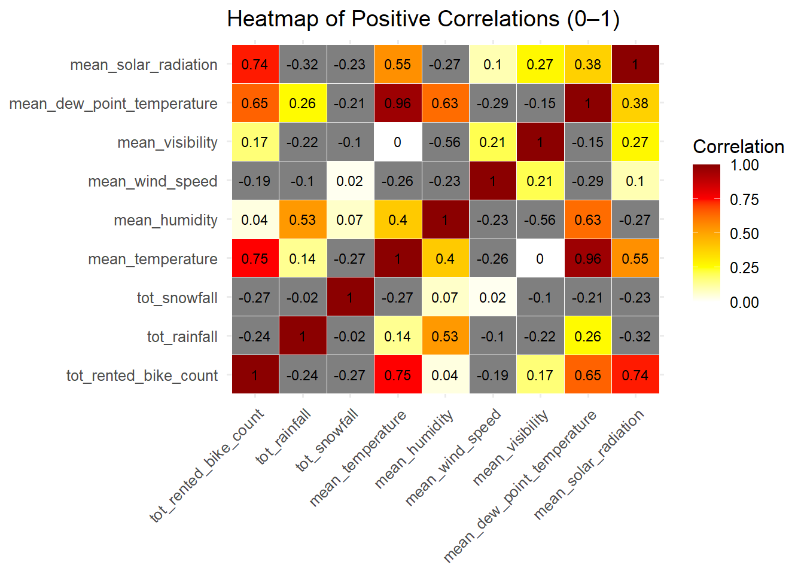

library(tidyverse)
library(tidyr)
library(readr)
library(psych)
library(ggplot2)
library(dplyr)
library(knitr)
library(skimr)
library(purrr)
library(janitor)
library(dplyr)
library(stringr)
library(reshape2)
library(lubridate)
library(tidymodels)Homework8: Basic Modeling Practice
#Load libraries
#Read the dataset
# 1.1 Use readr's encoding to detect on the raw file
raw_bytes <- read_file_raw("https://www4.stat.ncsu.edu/~online/datasets/SeoulBikeData.csv")
guess_encoding(raw_bytes)# A tibble: 2 × 2
encoding confidence
<chr> <dbl>
1 ISO-8859-1 0.51
2 ISO-8859-2 0.26# 1.2 Read the dataset
Bike_data <- read_csv(
"https://www4.stat.ncsu.edu/~online/datasets/SeoulBikeData.csv",
locale = locale(encoding = "ISO-8859-1")
)Rows: 8760 Columns: 14
── Column specification ────────────────────────────────────────────────────────
Delimiter: ","
chr (4): Date, Seasons, Holiday, Functioning Day
dbl (10): Rented Bike Count, Hour, Temperature(°C), Humidity(%), Wind speed ...
ℹ Use `spec()` to retrieve the full column specification for this data.
ℹ Specify the column types or set `show_col_types = FALSE` to quiet this message.Bike_data# A tibble: 8,760 × 14
Date `Rented Bike Count` Hour `Temperature(°C)` `Humidity(%)`
<chr> <dbl> <dbl> <dbl> <dbl>
1 01/12/2017 254 0 -5.2 37
2 01/12/2017 204 1 -5.5 38
3 01/12/2017 173 2 -6 39
4 01/12/2017 107 3 -6.2 40
5 01/12/2017 78 4 -6 36
6 01/12/2017 100 5 -6.4 37
7 01/12/2017 181 6 -6.6 35
8 01/12/2017 460 7 -7.4 38
9 01/12/2017 930 8 -7.6 37
10 01/12/2017 490 9 -6.5 27
# ℹ 8,750 more rows
# ℹ 9 more variables: `Wind speed (m/s)` <dbl>, `Visibility (10m)` <dbl>,
# `Dew point temperature(°C)` <dbl>, `Solar Radiation (MJ/m2)` <dbl>,
# `Rainfall(mm)` <dbl>, `Snowfall (cm)` <dbl>, Seasons <chr>, Holiday <chr>,
# `Functioning Day` <chr>EDA : Checking the data
# 2 Check for missingness
Bike_data |>
summarise(across(everything(), ~ sum(is.na(.)))) |>
pivot_longer(everything(),
names_to = "Variable",
values_to = "missing_count") %>%
arrange(desc(missing_count))# A tibble: 14 × 2
Variable missing_count
<chr> <int>
1 Date 0
2 Rented Bike Count 0
3 Hour 0
4 Temperature(°C) 0
5 Humidity(%) 0
6 Wind speed (m/s) 0
7 Visibility (10m) 0
8 Dew point temperature(°C) 0
9 Solar Radiation (MJ/m2) 0
10 Rainfall(mm) 0
11 Snowfall (cm) 0
12 Seasons 0
13 Holiday 0
14 Functioning Day 0# 2.1 Check the column types and the values within the columns
str(Bike_data)spc_tbl_ [8,760 × 14] (S3: spec_tbl_df/tbl_df/tbl/data.frame)
$ Date : chr [1:8760] "01/12/2017" "01/12/2017" "01/12/2017" "01/12/2017" ...
$ Rented Bike Count : num [1:8760] 254 204 173 107 78 100 181 460 930 490 ...
$ Hour : num [1:8760] 0 1 2 3 4 5 6 7 8 9 ...
$ Temperature(°C) : num [1:8760] -5.2 -5.5 -6 -6.2 -6 -6.4 -6.6 -7.4 -7.6 -6.5 ...
$ Humidity(%) : num [1:8760] 37 38 39 40 36 37 35 38 37 27 ...
$ Wind speed (m/s) : num [1:8760] 2.2 0.8 1 0.9 2.3 1.5 1.3 0.9 1.1 0.5 ...
$ Visibility (10m) : num [1:8760] 2000 2000 2000 2000 2000 ...
$ Dew point temperature(°C): num [1:8760] -17.6 -17.6 -17.7 -17.6 -18.6 -18.7 -19.5 -19.3 -19.8 -22.4 ...
$ Solar Radiation (MJ/m2) : num [1:8760] 0 0 0 0 0 0 0 0 0.01 0.23 ...
$ Rainfall(mm) : num [1:8760] 0 0 0 0 0 0 0 0 0 0 ...
$ Snowfall (cm) : num [1:8760] 0 0 0 0 0 0 0 0 0 0 ...
$ Seasons : chr [1:8760] "Winter" "Winter" "Winter" "Winter" ...
$ Holiday : chr [1:8760] "No Holiday" "No Holiday" "No Holiday" "No Holiday" ...
$ Functioning Day : chr [1:8760] "Yes" "Yes" "Yes" "Yes" ...
- attr(*, "spec")=
.. cols(
.. Date = col_character(),
.. `Rented Bike Count` = col_double(),
.. Hour = col_double(),
.. `Temperature(°C)` = col_double(),
.. `Humidity(%)` = col_double(),
.. `Wind speed (m/s)` = col_double(),
.. `Visibility (10m)` = col_double(),
.. `Dew point temperature(°C)` = col_double(),
.. `Solar Radiation (MJ/m2)` = col_double(),
.. `Rainfall(mm)` = col_double(),
.. `Snowfall (cm)` = col_double(),
.. Seasons = col_character(),
.. Holiday = col_character(),
.. `Functioning Day` = col_character()
.. )
- attr(*, "problems")=<externalptr> we have 8,760 rows of data and 14 columns. of the 14 variables,4 are character including date variable which needs to be changed to date type later.
# 2.2 basic summary statistics for the numeric variables
# Select only numeric columns
numeric_data <- Bike_data |>
select(where(is.numeric))
psych::describe(numeric_data) vars n mean sd median trimmed mad min
Rented Bike Count 1 8760 704.60 645.00 504.50 612.58 553.75 0.0
Hour 2 8760 11.50 6.92 11.50 11.50 8.90 0.0
Temperature(°C) 3 8760 12.88 11.94 13.70 13.19 13.94 -17.8
Humidity(%) 4 8760 58.23 20.36 57.00 58.02 23.72 0.0
Wind speed (m/s) 5 8760 1.72 1.04 1.50 1.63 1.04 0.0
Visibility (10m) 6 8760 1436.83 608.30 1698.00 1509.50 447.75 27.0
Dew point temperature(°C) 7 8760 4.07 13.06 5.10 4.76 14.38 -30.6
Solar Radiation (MJ/m2) 8 8760 0.57 0.87 0.01 0.38 0.01 0.0
Rainfall(mm) 9 8760 0.15 1.13 0.00 0.00 0.00 0.0
Snowfall (cm) 10 8760 0.08 0.44 0.00 0.00 0.00 0.0
max range skew kurtosis se
Rented Bike Count 3556.00 3556.00 1.15 0.85 6.89
Hour 23.00 23.00 0.00 -1.20 0.07
Temperature(°C) 39.40 57.20 -0.20 -0.84 0.13
Humidity(%) 98.00 98.00 0.06 -0.80 0.22
Wind speed (m/s) 7.40 7.40 0.89 0.73 0.01
Visibility (10m) 2000.00 1973.00 -0.70 -0.96 6.50
Dew point temperature(°C) 27.20 57.80 -0.37 -0.76 0.14
Solar Radiation (MJ/m2) 3.52 3.52 1.50 1.12 0.01
Rainfall(mm) 35.00 35.00 14.53 284.76 0.01
Snowfall (cm) 8.80 8.80 8.44 93.73 0.00We used describe function from psych package to came up with the summary table for the numeric variables. we have 10 numeric variables and according to the data, the average bike rental count computed across all hours and dates were 704.6.
# 2.3 check the unique values for the categorical variables
unique_cats <- Bike_data |>
select(where(~ (is.character(.) | is.factor(.)))) |> # only categorical
select(-matches("Date", ignore.case = TRUE)) |> # drop date column
map(unique)
unique_cats$Seasons
[1] "Winter" "Spring" "Summer" "Autumn"
$Holiday
[1] "No Holiday" "Holiday"
$`Functioning Day`
[1] "Yes" "No" we have three categorical variables with the above unique values.
# 3. change character date to date format
Bike_data$Date <- dmy(Bike_data$Date)# 4.turn Seasons, Holiday, and Functioning Day to factor
Bike_data <- Bike_data %>%
mutate(Seasons = as.factor(Seasons))%>%
mutate(Holiday = as.factor(Holiday)) %>%
mutate(`Functioning Day` = as.factor(`Functioning Day`))
Bike_data# A tibble: 8,760 × 14
Date `Rented Bike Count` Hour `Temperature(°C)` `Humidity(%)`
<date> <dbl> <dbl> <dbl> <dbl>
1 2017-12-01 254 0 -5.2 37
2 2017-12-01 204 1 -5.5 38
3 2017-12-01 173 2 -6 39
4 2017-12-01 107 3 -6.2 40
5 2017-12-01 78 4 -6 36
6 2017-12-01 100 5 -6.4 37
7 2017-12-01 181 6 -6.6 35
8 2017-12-01 460 7 -7.4 38
9 2017-12-01 930 8 -7.6 37
10 2017-12-01 490 9 -6.5 27
# ℹ 8,750 more rows
# ℹ 9 more variables: `Wind speed (m/s)` <dbl>, `Visibility (10m)` <dbl>,
# `Dew point temperature(°C)` <dbl>, `Solar Radiation (MJ/m2)` <dbl>,
# `Rainfall(mm)` <dbl>, `Snowfall (cm)` <dbl>, Seasons <fct>, Holiday <fct>,
# `Functioning Day` <fct># 5. give a cleaner variable names, strip the units from the variables that have units at the end to make it easy to use.
Bike_data <- Bike_data %>%
clean_names(case = "snake")%>%
rename_with(~ str_remove_all(., "_?(c|%|m_s|mj_m2|10m|cm|mm|min|m|percent)$"))
Bike_data# A tibble: 8,760 × 14
date rented_bike_count hour temperature humidity wind_speed visibility
<date> <dbl> <dbl> <dbl> <dbl> <dbl> <dbl>
1 2017-12-01 254 0 -5.2 37 2.2 2000
2 2017-12-01 204 1 -5.5 38 0.8 2000
3 2017-12-01 173 2 -6 39 1 2000
4 2017-12-01 107 3 -6.2 40 0.9 2000
5 2017-12-01 78 4 -6 36 2.3 2000
6 2017-12-01 100 5 -6.4 37 1.5 2000
7 2017-12-01 181 6 -6.6 35 1.3 2000
8 2017-12-01 460 7 -7.4 38 0.9 2000
9 2017-12-01 930 8 -7.6 37 1.1 2000
10 2017-12-01 490 9 -6.5 27 0.5 1928
# ℹ 8,750 more rows
# ℹ 7 more variables: dew_point_temperature <dbl>, solar_radiation <dbl>,
# rainfall <dbl>, snowfall <dbl>, seasons <fct>, holiday <fct>,
# functioning_day <fct># 6.Create summary statistics (especially related to the bike rental counts)
#do counts across your categorical variables
Bike_data|>
summarise(
n = n(),
mean = mean(rented_bike_count, na.rm = TRUE),
median = median(rented_bike_count, na.rm = TRUE),
sd = sd(rented_bike_count, na.rm = TRUE),
min = min(rented_bike_count, na.rm = TRUE),
max = max(rented_bike_count, na.rm = TRUE),
)# A tibble: 1 × 6
n mean median sd min max
<int> <dbl> <dbl> <dbl> <dbl> <dbl>
1 8760 705. 504. 645. 0 3556summary(Bike_data$rented_bike_count) Min. 1st Qu. Median Mean 3rd Qu. Max.
0.0 191.0 504.5 704.6 1065.2 3556.0 hist(Bike_data$rented_bike_count)
created summary statistics related to bike rental count across categorical variables.
# Bike rental by Season
season_summary <- Bike_data |>
group_by(seasons) |>
summarise(
mean_count = mean(rented_bike_count, na.rm = TRUE),
median_count = median(rented_bike_count, na.rm = TRUE),
sd_count = sd(rented_bike_count, na.rm = TRUE),
n = n()
)
season_summary# A tibble: 4 × 5
seasons mean_count median_count sd_count n
<fct> <dbl> <dbl> <dbl> <int>
1 Autumn 820. 764. 651. 2184
2 Spring 730. 583 622. 2208
3 Summer 1034. 906. 690. 2208
4 Winter 226. 203 150. 2160# Bike rental by Holiday
holiday_summary <- Bike_data |>
group_by(holiday) |>
summarise(
mean_count = mean(rented_bike_count, na.rm = TRUE),
median_count = median(rented_bike_count, na.rm = TRUE),
sd_count = sd(rented_bike_count, na.rm = TRUE),
n = n()
)
holiday_summary# A tibble: 2 × 5
holiday mean_count median_count sd_count n
<fct> <dbl> <dbl> <dbl> <int>
1 Holiday 500. 240 571. 432
2 No Holiday 715. 524. 647. 8328# Bike rental by functioning day
func_summary <- Bike_data |>
group_by(functioning_day) |>
summarise(
mean_count = mean(rented_bike_count, na.rm = TRUE),
median_count = median(rented_bike_count, na.rm = TRUE),
sd_count = sd(rented_bike_count, na.rm = TRUE),
n = n()
)
func_summary# A tibble: 2 × 5
functioning_day mean_count median_count sd_count n
<fct> <dbl> <dbl> <dbl> <int>
1 No 0 0 0 295
2 Yes 729. 542 642. 8465Based on the summary output, we can see that the average number of bike rental was the highest during summer season.Also, it indicates that bike rental is generally higher on regular days compared to holidays. we should note that the bike rental count is 0 where the functioning_day is “No” which means the stations were closed on non-functioning days, thus it makes sense to subset the data to ONLY functioning days before further analysis.
#sub-setting the data for functioning_day == "Yes"
Bike_data2 <- Bike_data|>filter(functioning_day == "Yes")
Bike_data2# A tibble: 8,465 × 14
date rented_bike_count hour temperature humidity wind_speed visibility
<date> <dbl> <dbl> <dbl> <dbl> <dbl> <dbl>
1 2017-12-01 254 0 -5.2 37 2.2 2000
2 2017-12-01 204 1 -5.5 38 0.8 2000
3 2017-12-01 173 2 -6 39 1 2000
4 2017-12-01 107 3 -6.2 40 0.9 2000
5 2017-12-01 78 4 -6 36 2.3 2000
6 2017-12-01 100 5 -6.4 37 1.5 2000
7 2017-12-01 181 6 -6.6 35 1.3 2000
8 2017-12-01 460 7 -7.4 38 0.9 2000
9 2017-12-01 930 8 -7.6 37 1.1 2000
10 2017-12-01 490 9 -6.5 27 0.5 1928
# ℹ 8,455 more rows
# ℹ 7 more variables: dew_point_temperature <dbl>, solar_radiation <dbl>,
# rainfall <dbl>, snowfall <dbl>, seasons <fct>, holiday <fct>,
# functioning_day <fct>Once we filtered our data for only the functioning days, We summarized our data across hours so that each day has one observation. To do this, we grouped our data by date,season and holiday variable and summarized across bike count, rainfall and snowfall to get the their total and summarized across weather related variables to get their mean value.
# 7.To simplify our analysis, we’ll summarize across the hours so that each day has one observation associated with it.
sumry <- Bike_data2 %>%
group_by(date,seasons, holiday ) %>%
summarise(
across(c(rented_bike_count, rainfall, snowfall), ~ sum(.x, na.rm = TRUE), .names = "tot_{.col}") ,
across(c(temperature,humidity,wind_speed,visibility,dew_point_temperature,solar_radiation),
~ mean(.x, na.rm = TRUE), .names = "mean_{.col}" ),
)%>%
ungroup()`summarise()` has grouped output by 'date', 'seasons'. You can override using
the `.groups` argument.sumry# A tibble: 353 × 12
date seasons holiday tot_rented_bike_count tot_rainfall tot_snowfall
<date> <fct> <fct> <dbl> <dbl> <dbl>
1 2017-12-01 Winter No Holiday 9539 0 0
2 2017-12-02 Winter No Holiday 8523 0 0
3 2017-12-03 Winter No Holiday 7222 4 0
4 2017-12-04 Winter No Holiday 8729 0.1 0
5 2017-12-05 Winter No Holiday 8307 0 0
6 2017-12-06 Winter No Holiday 6669 1.3 8.6
7 2017-12-07 Winter No Holiday 8549 0 10.4
8 2017-12-08 Winter No Holiday 8032 0 0
9 2017-12-09 Winter No Holiday 7233 0 0
10 2017-12-10 Winter No Holiday 3453 4.1 32.5
# ℹ 343 more rows
# ℹ 6 more variables: mean_temperature <dbl>, mean_humidity <dbl>,
# mean_wind_speed <dbl>, mean_visibility <dbl>,
# mean_dew_point_temperature <dbl>, mean_solar_radiation <dbl>#Number of days
nrow(sumry)[1] 353#confirm no duplicates
any(duplicated(sumry[, c("date", "seasons", "holiday")]))[1] FALSEWe can see that we have 353 distinct rows per day and no duplicates were found.
once “sumry” is my clean, analysis-ready dataset,we recreated the basic summary stats.
# 8. Recreate your basic summary stats and then create some plots to explore relationships. Report correlation between your numeric variables as well.
# Bike rental by Season
season_summaryNew <- sumry %>%
group_by(seasons) %>%
summarise(
mean_count = mean(tot_rented_bike_count, na.rm = TRUE),
median_count = median(tot_rented_bike_count, na.rm = TRUE),
sd_count = sd(tot_rented_bike_count, na.rm = TRUE),
n = n()
)
season_summaryNew# A tibble: 4 × 5
seasons mean_count median_count sd_count n
<fct> <dbl> <dbl> <dbl> <int>
1 Autumn 22099. 23350 6711. 81
2 Spring 17910. 17590 8357. 90
3 Summer 24818. 25572. 7297. 92
4 Winter 5413. 5498 1808. 90# Bike rental by Holiday
holiday_summaryNew <- sumry %>%
group_by(holiday) %>%
summarise(
mean_count = mean(tot_rented_bike_count, na.rm = TRUE),
median_count = median(tot_rented_bike_count, na.rm = TRUE),
sd_count = sd(tot_rented_bike_count, na.rm = TRUE),
n = n()
)
holiday_summaryNew# A tibble: 2 × 5
holiday mean_count median_count sd_count n
<fct> <dbl> <dbl> <dbl> <int>
1 Holiday 12700. 7184 10504. 17
2 No Holiday 17727. 19104. 9862. 336#A quick visualization
ggplot(sumry, aes(x = seasons, y = tot_rented_bike_count, fill = seasons)) +
geom_boxplot() +
labs(title = "Total Bike Rental by Season (Functioning Days Only)",
x = "Season", y = "Total Rented Bike") +
theme_minimal()
# Correlation between numeric variables
num_vars <- sumry |>
ungroup()|>
select(where(is.numeric))
str(num_vars)tibble [353 × 9] (S3: tbl_df/tbl/data.frame)
$ tot_rented_bike_count : num [1:353] 9539 8523 7222 8729 8307 ...
$ tot_rainfall : num [1:353] 0 0 4 0.1 0 1.3 0 0 0 4.1 ...
$ tot_snowfall : num [1:353] 0 0 0 0 0 8.6 10.4 0 0 32.5 ...
$ mean_temperature : num [1:353] -2.454 1.325 4.875 -0.304 -4.458 ...
$ mean_humidity : num [1:353] 45.9 62 81.5 52.5 36.4 ...
$ mean_wind_speed : num [1:353] 1.54 1.71 1.61 3.45 1.11 ...
$ mean_visibility : num [1:353] 1871 1471 456 1363 1959 ...
$ mean_dew_point_temperature: num [1:353] -13.55 -5.72 1.88 -9.93 -17.43 ...
$ mean_solar_radiation : num [1:353] 0.2487 0.2637 0.1254 0.2829 0.0358 ...# Compute correlation matrix
cor_matrix <- round(cor(num_vars, use = "pairwise.complete.obs"), 2)
# Melt for ggplot
cor_long <- melt(cor_matrix)
# Plot heatmap (0 to 1 scale)
ggplot(cor_long, aes(Var1, Var2, fill = value)) +
geom_tile(color = "white") +
geom_text(aes(label = round(value, 2)), color = "black", size = 3) +
scale_fill_gradientn(
colours = c("white", "yellow", "orange", "red", "darkred"),
limits = c(-0, 1),
name = "Correlation"
) +
labs(title = "Heatmap of Positive Correlations (0–1)",
x = NULL, y = NULL) +
theme_minimal(base_size = 12) +
theme(axis.text.x = element_text(angle = 45, hjust = 1))
From the box plot above, we can see clearly see that the total Bike rented is highest during summer and lowest during winter. It is good to note that, mean temperature has strong positive correlation with bike rental activity with r=0.75 suggesting higher temperature correspond to higher bike rental. you can see similar relation with variable dew point temperature and solar radiation as both accompany high temperature.
Split the Data
Now we are ready to split our data into training and test
# Fix the random numbers by setting the seed
# This enables the analysis to be reproducible
set.seed(1216)
# Put 3/4 of the data into the training set
Bike_split <- initial_split(sumry, prop = 3/4, strata = seasons)
# Create data frames for the two sets:
train_bike <- training(Bike_split)
test_bike <- testing(Bike_split)we have 90 observation in the test dataset and 263 in the training dataset.
we performed ten-fold cross validation on the training dataset.We kept the stratification so that each fold maintain the same seasonal distribution as the full dataset.
set.seed(1216)
trainCV <- vfold_cv(
train_bike,
v = 10, # number of folds
strata = seasons # keep stratification consistent
)
trainCV# 10-fold cross-validation using stratification
# A tibble: 10 × 2
splits id
<list> <chr>
1 <split [236/27]> Fold01
2 <split [236/27]> Fold02
3 <split [236/27]> Fold03
4 <split [236/27]> Fold04
5 <split [236/27]> Fold05
6 <split [236/27]> Fold06
7 <split [236/27]> Fold07
8 <split [238/25]> Fold08
9 <split [238/25]> Fold09
10 <split [239/24]> Fold10Fitting MLR Models
Below, we created a recipe using the training dataset,indicating,tot_rented_bike_count as a response variable and all the rest as predictor variables excluding date.
First recipe
In the first recipe, we created, a new factor variable representing weekday vs weekend then the date and the intermediate variable creating this factor variable was removed, numeric variables were standardized (Center and scale). Dummy variables were also generated for the seasons, holiday and the newly created factor variable. data was then prepared with prep() and the transformations were applied using bake() prior to modeling.
#1st recipes
# 1) Use Date to get day-of-week, but drop the original Date from predictors
# This will create a column like "Date_dow"
bike_rec_1 <- recipe(tot_rented_bike_count ~ ., data = train_bike) %>%
recipes::step_date(date,features = "dow", keep_original_cols = FALSE ) %>%
# 2) Create weekday/weekend factor from the day-of-week variable
# (Date_dow is an ordered factor from Sun, Mon, ..., Sat)
step_mutate(
day_type = factor(if_else(
date_dow %in% c("Sat", "Sun"),
"weekend",
"weekday"
))
) %>%
# 3) Remove the intermediate day-of-week,created by step_date().
step_rm(date_dow) %>%
# 4) Standardize (center & scale) all numeric predictors
step_normalize(all_numeric_predictors()) %>%
# 5) Create dummy variables for all nominal predictors (Seasons, Holiday, day_type, etc.)
step_dummy(all_nominal_predictors())
bike_rec_1── Recipe ──────────────────────────────────────────────────────────────────────── Inputs Number of variables by roleoutcome: 1
predictor: 11── Operations • Date features from: date• Variable mutation for: factor(if_else(date_dow %in% c("Sat", "Sun"),
"weekend", "weekday"))• Variables removed: date_dow• Centering and scaling for: all_numeric_predictors()• Dummy variables from: all_nominal_predictors()bike_prep_1 <- prep(bike_rec_1)
baked_train <- bake(bike_prep_1, new_data = NULL)
glimpse(baked_train)Rows: 263
Columns: 14
$ tot_rainfall <dbl> -0.31060435, 2.48974199, -0.31060435, -0.31…
$ tot_snowfall <dbl> -0.2261843, -0.2261843, -0.2261843, -0.2261…
$ mean_temperature <dbl> 1.075165580, 0.915833776, 0.885689921, 0.93…
$ mean_humidity <dbl> 0.16024055, 1.57056867, 0.85842279, 0.19933…
$ mean_wind_speed <dbl> -0.85650959, -1.11443791, 0.83844794, 1.435…
$ mean_visibility <dbl> 0.85841057, 0.17765465, 0.07738893, 1.09250…
$ mean_dew_point_temperature <dbl> 0.97529819, 1.24576766, 1.00796358, 0.87468…
$ mean_solar_radiation <dbl> 0.98196617, -1.31170000, 1.06383641, 1.1703…
$ tot_rented_bike_count <dbl> 26010, 10802, 29529, 31114, 30381, 29813, 3…
$ seasons_Spring <dbl> 0, 0, 0, 0, 0, 0, 0, 0, 0, 0, 0, 0, 0, 0, 0…
$ seasons_Summer <dbl> 0, 0, 0, 0, 0, 0, 0, 0, 0, 0, 0, 0, 0, 0, 0…
$ seasons_Winter <dbl> 0, 0, 0, 0, 0, 0, 0, 0, 0, 0, 0, 0, 0, 0, 0…
$ holiday_No.Holiday <dbl> 1, 1, 1, 1, 1, 1, 1, 1, 1, 1, 1, 1, 1, 0, 0…
$ day_type_weekend <dbl> 1, 0, 0, 0, 0, 1, 0, 0, 0, 0, 1, 0, 1, 1, 0…Second recipe
For the second recipe we did the same thing as the first recipe, in addition, interaction terms were created between selected variables to allow the model to capture combined effects. The recipe was prepared using prep() and applied to the dataset using bake() prior to modeling.”
#2nd recipes
# 1) Use Date to get day-of-week, but drop the original Date from predictors
# This will create a column like "Date_dow"
bike_rec_2 <- recipe(tot_rented_bike_count ~ ., data = train_bike) %>%
recipes::step_date(date,features = "dow", keep_original_cols = FALSE ) %>%
# 2) Create weekday/weekend factor from the day-of-week variable
# (Date_dow is an ordered factor from Sun, Mon, ..., Sat)
step_mutate(
day_type = factor(if_else(
date_dow %in% c("Sat", "Sun"),
"weekend",
"weekday"
))
) %>%
# 3) Remove the intermediate day-of-week variable created by step_date()
step_rm(date_dow) %>%
# 5) Create dummy variables for all nominal predictors (Seasons, Holiday, day_type, etc.)
step_dummy(all_nominal_predictors(),keep_original_cols = FALSE)%>%
# Add interaction terms:
# 1. seasons * holiday
# 2. seasons * temp
# 3. temp * rainfall
step_interact(
# Use selector functions directly with the colon operator, no parentheses
terms = ~ starts_with("seasons_"):holiday_No.Holiday +
~ starts_with("seasons_"):mean_temperature +
mean_temperature:tot_rainfall
) %>%
# 4) Standardize (center & scale) all numeric predictors
step_normalize(all_numeric_predictors())
bike_rec_2── Recipe ──────────────────────────────────────────────────────────────────────── Inputs Number of variables by roleoutcome: 1
predictor: 11── Operations • Date features from: date• Variable mutation for: factor(if_else(date_dow %in% c("Sat", "Sun"),
"weekend", "weekday"))• Variables removed: date_dow• Dummy variables from: all_nominal_predictors()• Interactions with: ...• Centering and scaling for: all_numeric_predictors()bike_prep_2 <- prep(bike_rec_2)
baked_train2 <- bake(bike_prep_2, new_data = NULL)
glimpse(baked_train2)Rows: 263
Columns: 21
$ tot_rainfall <dbl> -0.31060435, 2.48974199, -0.310604…
$ tot_snowfall <dbl> -0.2261843, -0.2261843, -0.2261843…
$ mean_temperature <dbl> 1.075165580, 0.915833776, 0.885689…
$ mean_humidity <dbl> 0.16024055, 1.57056867, 0.85842279…
$ mean_wind_speed <dbl> -0.85650959, -1.11443791, 0.838447…
$ mean_visibility <dbl> 0.85841057, 0.17765465, 0.07738893…
$ mean_dew_point_temperature <dbl> 0.97529819, 1.24576766, 1.00796358…
$ mean_solar_radiation <dbl> 0.98196617, -1.31170000, 1.0638364…
$ tot_rented_bike_count <dbl> 26010, 10802, 29529, 31114, 30381,…
$ seasons_Spring <dbl> -0.5835555, -0.5835555, -0.5835555…
$ seasons_Summer <dbl> -0.595246, -0.595246, -0.595246, -…
$ seasons_Winter <dbl> -0.5835555, -0.5835555, -0.5835555…
$ holiday_No.Holiday <dbl> 0.2366667, 0.2366667, 0.2366667, 0…
$ day_type_weekend <dbl> 1.5656215, -0.6362954, -0.6362954,…
$ seasons_Spring_x_holiday_No.Holiday <dbl> -0.5718694, -0.5718694, -0.5718694…
$ seasons_Summer_x_holiday_No.Holiday <dbl> -0.5835555, -0.5835555, -0.5835555…
$ seasons_Winter_x_holiday_No.Holiday <dbl> -0.5426257, -0.5426257, -0.5426257…
$ seasons_Spring_x_mean_temperature <dbl> -0.5290056, -0.5290056, -0.5290056…
$ seasons_Summer_x_mean_temperature <dbl> -0.5879746, -0.5879746, -0.5879746…
$ seasons_Winter_x_mean_temperature <dbl> 0.2362109, 0.2362109, 0.2362109, 0…
$ mean_temperature_x_tot_rainfall <dbl> -0.27156936, 2.90166999, -0.271569…Third recipe
For the third recipe, in addition to the second recipe, quadratic terms were created for numeric predictors to capture potential nonlinear relationships. The recipe was prepared using prep() and applied to the dataset using bake() prior to modeling.”
#3rd recipes
# 1) Use Date to get day-of-week, but drop the original Date from predictors
# This will create a column like "Date_dow"
bike_rec_3 <- recipe(tot_rented_bike_count ~ ., data = train_bike) %>%
recipes::step_date(date,features = "dow", keep_original_cols = FALSE ) %>%
# 2) Create weekday/weekend factor from the day-of-week variable
# (Date_dow is an ordered factor from Sun, Mon, ..., Sat)
step_mutate(
day_type = factor(if_else(
date_dow %in% c("Sat", "Sun"),
"weekend",
"weekday"
))
) %>%
# 3) Remove the intermediate day-of-week variable created by step_date()
step_rm(date_dow) %>%
# 5) Create dummy variables for all nominal predictors (Seasons, Holiday, day_type, etc.)
step_dummy(all_nominal_predictors(),keep_original_cols = FALSE, one_hot = FALSE)%>% # avoid full-rank dummy issue
# Add interaction terms:
# 1. seasons * holiday
# 2. seasons * temp
# 3. temp * rainfall
step_interact(
# Use selector functions directly with the colon operator, no parentheses
terms = ~ starts_with("seasons_"):holiday_No.Holiday +
~ starts_with("seasons_"):mean_temperature +
mean_temperature:tot_rainfall
) %>%
# 4. add quadratic terms for all numeric predictors
step_poly(all_numeric_predictors()&
!starts_with("seasons") &
!starts_with("holiday") &
!starts_with("day_type"), degree = 2, options = list(raw = TRUE)) %>%
# 4) Standardize (center & scale) all numeric predictors
step_normalize(all_numeric_predictors())
bike_rec_3── Recipe ──────────────────────────────────────────────────────────────────────── Inputs Number of variables by roleoutcome: 1
predictor: 11── Operations • Date features from: date• Variable mutation for: factor(if_else(date_dow %in% c("Sat", "Sun"),
"weekend", "weekday"))• Variables removed: date_dow• Dummy variables from: all_nominal_predictors()• Interactions with: ...• Polynomial expansion on: all_numeric_predictors() & !starts_with("seasons") &
!starts_with("holiday") & !starts_with("day_type")• Centering and scaling for: all_numeric_predictors()bike_prep_3 <- prep(bike_rec_3)
baked_train3 <- bake(bike_prep_3, new_data = NULL)
glimpse(baked_train3)Rows: 263
Columns: 30
$ tot_rented_bike_count <dbl> 26010, 10802, 29529, 31114, 303…
$ seasons_Spring <dbl> -0.5835555, -0.5835555, -0.5835…
$ seasons_Summer <dbl> -0.595246, -0.595246, -0.595246…
$ seasons_Winter <dbl> -0.5835555, -0.5835555, -0.5835…
$ holiday_No.Holiday <dbl> 0.2366667, 0.2366667, 0.2366667…
$ day_type_weekend <dbl> 1.5656215, -0.6362954, -0.63629…
$ seasons_Spring_x_holiday_No.Holiday <dbl> -0.5718694, -0.5718694, -0.5718…
$ seasons_Summer_x_holiday_No.Holiday <dbl> -0.5835555, -0.5835555, -0.5835…
$ seasons_Winter_x_holiday_No.Holiday <dbl> -0.5426257, -0.5426257, -0.5426…
$ seasons_Spring_x_mean_temperature <dbl> -0.5290056, -0.5290056, -0.5290…
$ seasons_Summer_x_mean_temperature <dbl> -0.5879746, -0.5879746, -0.5879…
$ seasons_Winter_x_mean_temperature <dbl> 0.2362109, 0.2362109, 0.2362109…
$ tot_rainfall_poly_1 <dbl> -0.31060435, 2.48974199, -0.310…
$ tot_rainfall_poly_2 <dbl> -0.1860712, 1.1493322, -0.18607…
$ tot_snowfall_poly_1 <dbl> -0.2261843, -0.2261843, -0.2261…
$ tot_snowfall_poly_2 <dbl> -0.167489, -0.167489, -0.167489…
$ mean_temperature_poly_1 <dbl> 1.075165580, 0.915833776, 0.885…
$ mean_temperature_poly_2 <dbl> 1.13452210, 0.83639586, 0.78252…
$ mean_humidity_poly_1 <dbl> 0.16024055, 1.57056867, 0.85842…
$ mean_humidity_poly_2 <dbl> 0.03541215, 1.67491209, 0.78693…
$ mean_wind_speed_poly_1 <dbl> -0.85650959, -1.11443791, 0.838…
$ mean_wind_speed_poly_2 <dbl> -0.76321390, -0.90987834, 0.669…
$ mean_visibility_poly_1 <dbl> 0.85841057, 0.17765465, 0.07738…
$ mean_visibility_poly_2 <dbl> 0.8941104, 0.0113544, -0.103732…
$ mean_dew_point_temperature_poly_1 <dbl> 0.97529819, 1.24576766, 1.00796…
$ mean_dew_point_temperature_poly_2 <dbl> 0.5544984, 1.2655065, 0.6333100…
$ mean_solar_radiation_poly_1 <dbl> 0.98196617, -1.31170000, 1.0638…
$ mean_solar_radiation_poly_2 <dbl> 0.89021421, -1.01074072, 1.0089…
$ mean_temperature_x_tot_rainfall_poly_1 <dbl> -0.27156936, 2.90166999, -0.271…
$ mean_temperature_x_tot_rainfall_poly_2 <dbl> -0.1595040, 1.3416138, -0.15950…Set up LM
Here, we set up the linear model with linear_reg and ‘lm’ engine which fits the model by finding the line that best fits the data by minimzing squared errors.
bike_lm <- linear_reg() %>%
set_engine("lm",rankdeficient = "NA") %>%
set_mode("regression")workflow to integrate the pre-processing recipe with the linear regression model.
bike_wf1 <- workflow() %>%
add_recipe(bike_rec_1) %>%
add_model(bike_lm)
bike_wf2 <- workflow() %>%
add_recipe(bike_rec_2) %>%
add_model(bike_lm)
bike_wf3 <- workflow() %>%
add_recipe(bike_rec_3) %>%
add_model(bike_lm) To select the best model, each of the workflow was trained and evaluated using 10-fold cross-validation. The fit_resamples() function was applied to each fold, and the resulting training set cross-validated errors were compared to identify the workflow with the lowest RMSE.
res1 <- fit_resamples(bike_wf1, resamples = trainCV, metrics = metric_set(rmse, rsq),
control = control_resamples(save_pred = TRUE))
res2 <- fit_resamples(bike_wf2, resamples = trainCV, metrics = metric_set(rmse, rsq),
control = control_resamples(save_pred = TRUE))
res3 <- fit_resamples(bike_wf3, resamples = trainCV, metrics = metric_set(rmse, rsq),
control = control_resamples(save_pred = TRUE))
collect_metrics(res1)# A tibble: 2 × 6
.metric .estimator mean n std_err .config
<chr> <chr> <dbl> <int> <dbl> <chr>
1 rmse standard 4022. 10 136. pre0_mod0_post0
2 rsq standard 0.837 10 0.0123 pre0_mod0_post0collect_metrics(res2)# A tibble: 2 × 6
.metric .estimator mean n std_err .config
<chr> <chr> <dbl> <int> <dbl> <chr>
1 rmse standard 3125. 10 197. pre0_mod0_post0
2 rsq standard 0.901 10 0.0148 pre0_mod0_post0collect_metrics(res3)# A tibble: 2 × 6
.metric .estimator mean n std_err .config
<chr> <chr> <dbl> <int> <dbl> <chr>
1 rmse standard 3021. 10 200. pre0_mod0_post0
2 rsq standard 0.905 10 0.0158 pre0_mod0_post0combined all the metrices, added a column model and filtered it by rmse. Recipe 3 has the lowest RSME hence the best model.
bind_rows(
collect_metrics(res1) %>% mutate(model = "recipe1"),
collect_metrics(res2) %>% mutate(model = "recipe2"),
collect_metrics(res3) %>% mutate(model = "recipe3")
) %>%
filter(.metric == "rmse") %>% # compare based on RMSE
arrange(mean)# A tibble: 3 × 7
.metric .estimator mean n std_err .config model
<chr> <chr> <dbl> <int> <dbl> <chr> <chr>
1 rmse standard 3021. 10 200. pre0_mod0_post0 recipe3
2 rmse standard 3125. 10 197. pre0_mod0_post0 recipe2
3 rmse standard 4022. 10 136. pre0_mod0_post0 recipe1we then fit the best model to the entire training dataset and computed RMSE
best_wf <- bike_wf3
final_fit <- last_fit(best_wf, split = Bike_split, metrics = metric_set(rmse))
collect_metrics(final_fit)# A tibble: 1 × 4
.metric .estimator .estimate .config
<chr> <chr> <dbl> <chr>
1 rmse standard 3003. pre0_mod0_post0Finally, we Obtained coefficient table using extract_fit_parsnip()and tidy().
final_model <- extract_fit_parsnip(final_fit)
tidy(final_model)# A tibble: 30 × 5
term estimate std.error statistic p.value
<chr> <dbl> <dbl> <dbl> <dbl>
1 (Intercept) 17450. 169. 103. 2.11e-196
2 seasons_Spring -3923. 1363. -2.88 4.36e- 3
3 seasons_Summer 13374. 2292. 5.84 1.78e- 8
4 seasons_Winter -1579. 1102. -1.43 1.53e- 1
5 holiday_No.Holiday 900. 376. 2.40 1.74e- 2
6 day_type_weekend -927. 175. -5.31 2.61e- 7
7 seasons_Spring_x_holiday_No.Holiday -282. 1183. -0.239 8.12e- 1
8 seasons_Summer_x_holiday_No.Holiday -285. 1132. -0.251 8.02e- 1
9 seasons_Winter_x_holiday_No.Holiday -540. 854. -0.633 5.28e- 1
10 seasons_Spring_x_mean_temperature 2582. 625. 4.13 5.04e- 5
# ℹ 20 more rowsFrom the final model we can interpret the coefficient for seasons_Spring as bike rental in spring is predicted to be ~3923 fewer than autumn, our reference season.Summer is predicted to have ~13373 more bike rental compared to autumn. Weekends are predicted to have 927 fewer bike rentals than week days which is our reference group.